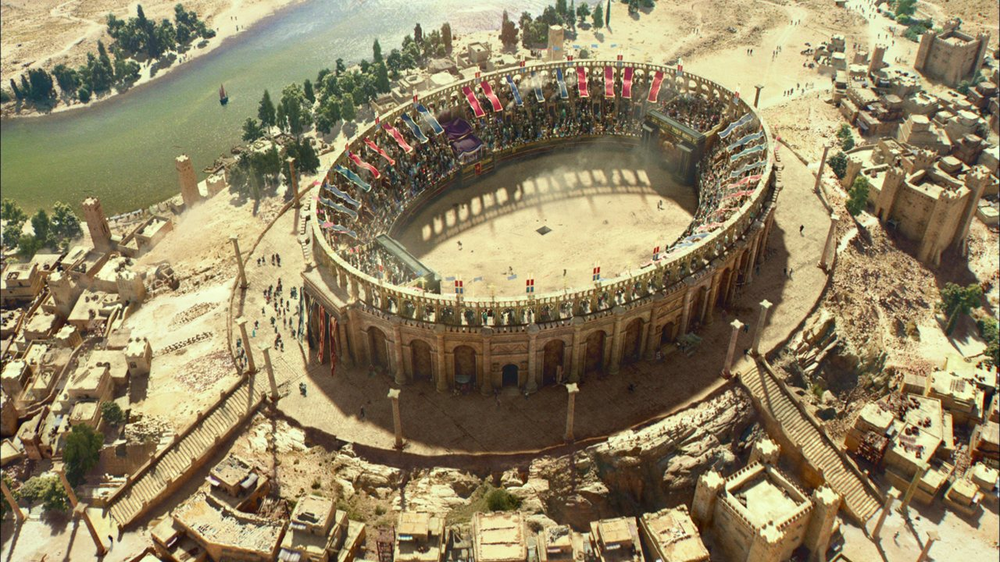
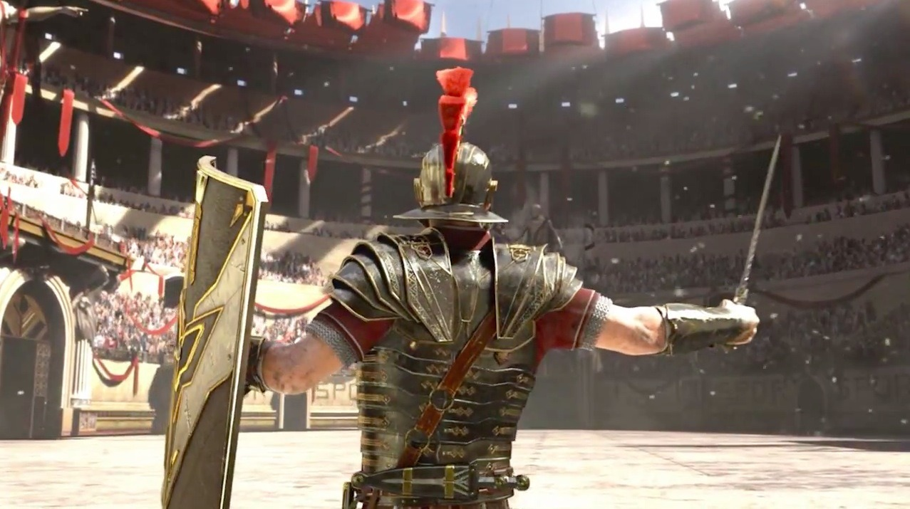
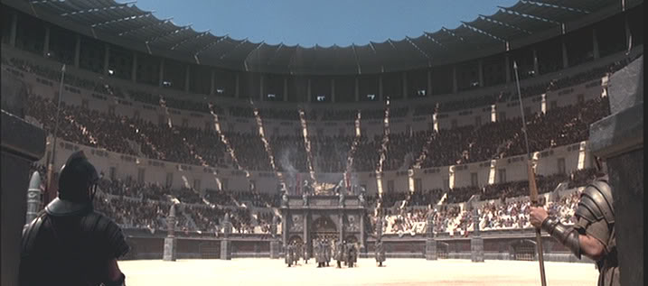

The Third Idea
- The Infographic Project
- Description: (Not decided what yet) There will be some type of monument or something of that sort and this will be a website about interactive learning. What I mean by this, instead of learning the information via text, you have an image, and each section you want to learn about, you click on that section and learn.



Inside the Arena:
The Colosseum could hold, it is estimated, between 50,000 and 80,000 spectators, having an average audience of some 65,000;it was used for gladiatorial contests and public spectacles such as mock sea battles (for only a short time as the hypogeum was soon filled in with mechanisms to support the other activities), animal hunts, executions, re-enactments of famous battles, and dramas based on Classical mythology. The building ceased to be used for entertainment in the early medieval era. It was later reused for such purposes as housing, workshops, quarters for a religious order, a fortress, a quarry, and a Christian shrine.